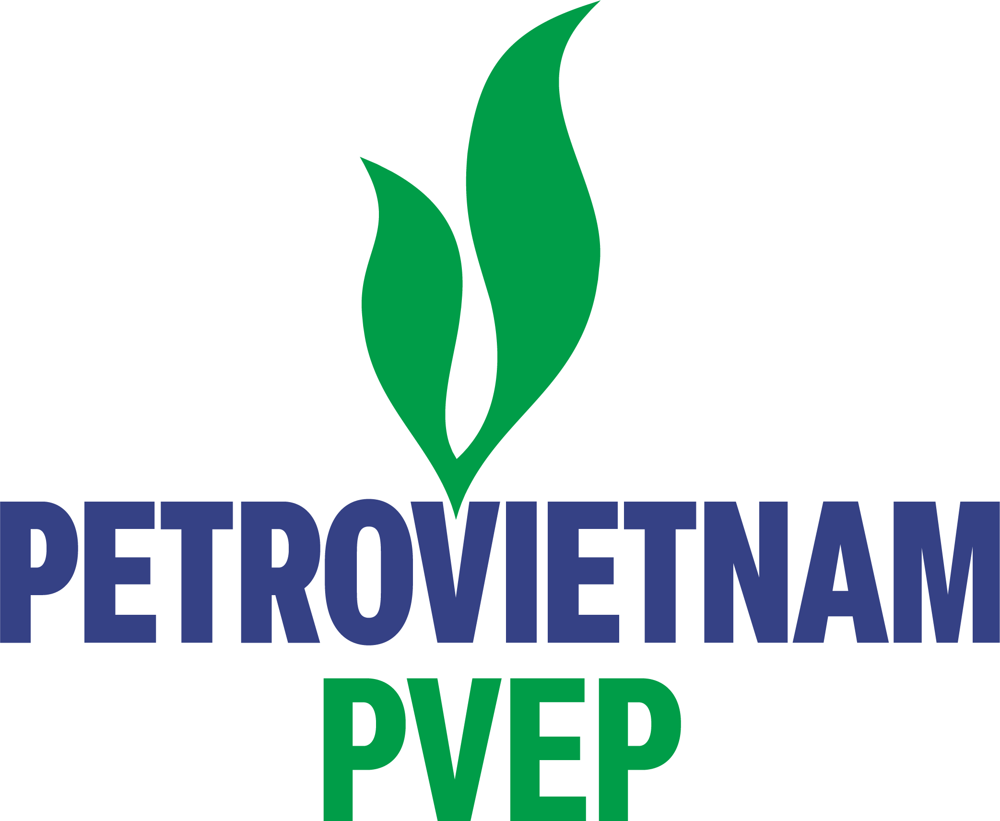

Phần nền mờ trong thanh = % hoàn thành thực tế đã cập nhật. Vạch đỏ dọc = ngày báo cáo. Bấm vào thanh để xem chi tiết.
% Hoàn thành và Trạng thái có thể sửa trực tiếp trong bảng; số liệu lưu trên trình duyệt này (localStorage) và phản ánh sang mọi biểu đồ. Dùng "Xuất CSV" để đưa số liệu trở lại file Excel gốc.
Trợ lý phân tích trực tiếp dữ liệu trên dashboard (offline, không gửi ra ngoài), cập nhật theo ngày báo cáo & số liệu bạn nhập ở tab Bảng theo dõi.